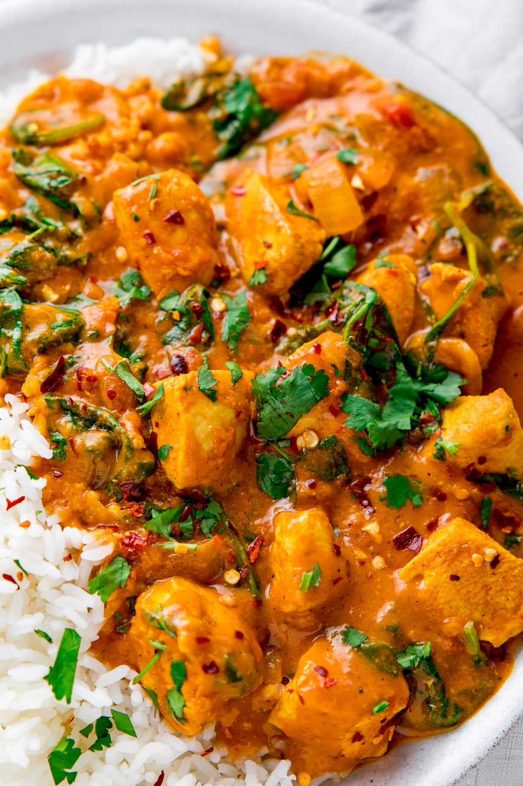

Visit our Chicken Biriyani page
DescriptionA rich, flavorful and aromatic chicken curry made with tender chicken, onions, tomatos and blend of warm spices.
Mix the chicken wtih yogurt, turmeric, chili powder and a little salt. Let it rest for about 20-30 minutes.
Heat oil in a large pan. Add the sliced onions and cook until golden brown.
Add the ginger and garlic and cook for 1-2 minutes until fragrant.
Add chopped tomatos, coriander powder, cumin powder, chili powder and salt. Cook unitl the tomatos become soft and the oil starts separating.
Add the marinated chicken and cook over medium heat for about 8-10 minutes, stirring occasionally.
Pour in the water, cover the pan and simmer for about 20-50 minutes, or until the chicken in completely cooked and tender.
Add garam masala and green chilies. Cook for another 2-3 minutes.
Granish with fresh coriander leaves. Serve hot with rice, roti or naan.